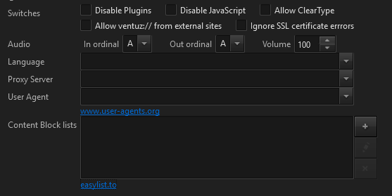

The Machine Configuration is a subsection of the Ventuz Configuration and defines common settings that are not changed very often:
| Generate Touch for Mouse | Enable to generate artificial touch events for mouse movements. This allows a mouse to trigger interaction nodes such as the Touch Button. |
| TouchGroups LMB | Specifies the TouchGroups used for left mouse button touch events. |
| TouchGroups RMB | Specifies the TouchGroups used for right mouse button touch events. |
The Windows Touch API was introduced by Microsoft with Windows Vista/Windows 7 to present a uniform way of devices interacting with the Windows operating system. It is usually only used for simple setups: one touch LCD display that is connected to a single machine. To support multi touch interaction with Windows applications that have no explicit multi touch support, a Windows Touch display generates both touch as well as artificial mouse information.
| Enabled | Enables the Windows Multitouch messages and blocks the artificial mouse messages generated by the same display. To use a touch display with mouse I/O nodes, deactivate this checkbox. |
| TouchGroups | Specifies the TouchGroups used for touch events generated by Windows Touch devices. |
The TUIO network protocol is often used by camera-based tracking systems or other dedicated Multi Touch input devices. It is the de-facto standard for transmitting touch information between devices/machines. Touch LCD displays, however, often only implement the Windows Touch protocol.
| Enabled | Enables the TUIO input. |
| UDP Port | UDP/IP port for TUIO messages. The default port used for the TUIO protocol is 3333. |
| Multicast IP | Multicast IP address used for TUIO messages. If left empty UDP Unicast is used and the TUIO sender must send the data to the local IP address of this Ventuz machine. |
| TouchGroups | Specifies the TouchGroups used for touch events received via TUIO protocol. |
The Ventuz Input Subsystem is capable of distributing input information from one machine to a cluster of machines. For example, a mouse attached to the host computer can be relayed to a number of rendering client machines. For more information, see Input Handling inside Ventuz. Please note that a valid Cluster License must exist to enable the Cluster Networking for interactivity.
| Single Machine Setup | The machine will only react to input information from devices attached to itself. The information will neither be broadcast to the network nor will the machine react to any information that may be broadcast by a Master machine in the same network. |
| Master | The machine will broadcast the information received from hardware devices attached to it into the network. It will not react to the information directly but listen to the sent network packages in the same way as a Client machine. |
| Client | The Ventuz scene will not receive any input from hardware devices attached to the local machine. However, it will receive and react to input broadcast by the Master machine. |
| Processing Delay | When using multiple machines, each may have a slightly different latency when it comes to receiving information from the input Master. A machine caches received information until the machine's clock matches the timestamp in the input information package plus the processing delay. So if it takes up to 3 frames to send information from the host to one machine but only 1 frame to get it to another, a sufficiently high processing delay forces all machines to process the information at the same time. |
A Master-Client touch setup for a multi-machine Cluster requires a GroupID > 0 on the involved machines!
| Scale with Window Size | Both the Inertia and Tick Attraction threshold are based on the nodes mapping area, not pixel resolution. Therefore increasing the window size will increase the size of the mapping area coordinate system in screen space and a specific movement will result in a smaller velocity than before. By activating this option, Ventuz will compensate for such changes automatically. |
| Scaling Factor | Use this value to scale the Inertia and Tick Attraction Threshold of all Translation/Rotation/Transformation Nodes. This is most useful when the target presentation system has a much larger display (in physical size, not resolution) than the system the scene was authored on but the node behaviors should feel the same. |
Deprecated
Remoting 2 is a Microsoft .net Remoting based protocol that was introduced in Ventuz 2008 (V2). This protocol still exists in Ventuz 4 but does not support the entire set of functionality (such as Template Engine, Live Options, etc). It is Recommended to use Remoting 4 for new client applications. Ventuz Director uses Remoting 4.
| Enabled | Enables the .net Remoting remote interface. |
| TCP Port | TCP/IP Port to be used. |
Remoting 4 was introduced with the release of Ventuz 4 and is the recommended way to remote Ventuz Runtime. Remoting 4 is always enabled and uses TCP port 19400. This settings are not adjustable. See Remoting
| Enabled | Enables the Miranda/Vertigo remote interface. |
| TCP Port | TCP/IP Port to be used. |
Deprecated
The Command Line Interface (CLI) is a very simple TCP text based interface to control very simple actions in Ventuz Runtime. This protocol still exists in Ventuz 4 but does not support the entire set of functionality (such as Template Engine, Live Options, etc). It is recommended to use Remoting 4 for new client applications. Ventuz Director uses Remoting 4 as well.
| Enabled | Enables the CLI remote interface. |
| Command Separator | Line-ending to be used for CLI commands. |
| Line Separator | If text values are transferred, this line-ending is used to substitute line-feeds. A safer way to transfer line feeds is to HTML-encode them, e.g. |
| Command Indexing | If Command Indexing is enabled (other than None) every command has to be led by an command index value. Any response to this command will be send with same index number. The mode Advanced allows to send an index of -1 to tell the CLI that no response is required at all. |
| Encoding | Selects the character encoding to be used. |
OSC Remoting is a very simple Open Sound Control based protocol to control DataItems of the SceneData. It only controls the current scene loaded in Port 0 of the layout scene in pipe 0. It is unable to manage scenes or Templates. For more sophisticated remoting capabilities use Remoting 4
| Enabled | Enables the OSC remote interface. |
| Receive UDP Port | Defines the UDP/IP port to use for receiving OSC messages. |
| Receive Multicast IP | If specified, the [wikiRemotingDeprecated OSC] remote interface. |
| Receive UDP Port | Defines the UDP/IP port to use for receiving OSC messages. |
| Receive Multicast IP | If specified, the OSC Remoting listens to a UDP Multicast group. If left blank, UDP Unicast is used. |
| Send Enabled | If enabled, externalized events are sent as an OSC message. |
| Send UDP Port | Defines the UDP/IP port to be used for sending events. |
| Send Multicast IP | Defines the UDP/IP address to be used for sending events. |
| Receive project data | Enables the DMX Support for the Project Data Channels |
| Universe | Sets the DMX universe the Project Data listens to. |
| Channel | Sets the BaseChannel for the universe configured above. |
| Enable Art-Net | Sets up the Art-Net driver. |
| Network Address / Netmask | Specifies the network used for Art-Net. Presets offers the two Art-Net standard networks 2.0.0.0 and 10.0.0.0 - which most DMX hardware devices use - as well as the networks currently configured on the machines ethernet devices. |
| DMX send mode | Newer versions of Art-Net support auto detection of connected devices, older do not. The preferred send mode setting is Auto: Ventuz registers itself in the network as Art-Net node and automatically finds other nodes to send to. If that does not work because there are unsupported nodes in the network, the send mode can be set to either Broadcast - to broadcast the DMX data to the network - or Unicast to send the data to all IP Addresses in the list below. |
| Unicast destinations | When Unicast is set as DMX send mode, the IP Addresses in this list will be used. |
| Limit rate to DMX | The original DMX protocol is a serial bus, which usually can not transfer more that 40 updates per second over the cable. With network based protocols like Art-Net Ventuz can update data at full frame rate. Especially older Art-Net to DMX interfaces are struggling with high data rates. Limit rate to DMX restricts Ventuz to a maximum of 40 DMX data updates per second. It will be a multiple of the frame rate. |
| Art-Net net / Subnet | Art-Net specification separates the universes into 128 Nets, 16 Subnets and 16 Universes. Net and Subnet are specified in this setting. Ventuz then offers 16 input and 16 output universes. |
| Unused out channels | This setting specifies if unused output channels output 0: Black Out, or the last set value: Keep Last. |
| Limit rate to DMX | The original DMX protocol is a serial bus, which usually can not transfer more that 40 updates per second over the cable. With network based protocols like Art-Net Ventuz can update data at full frame rate. Especially older Art-Net to DMX interfaces are struggling with high data rates. Limit rate to DMX restricts Ventuz to a maximum of 40 DMX data updates per second. It will be a multiple of the frame rate. |
| Art-Net net / Subnet | Art-Net specification separates the universes into 128 Nets, 16 Subnets and 16 Universes. Net and Subnet are specified in this setting. Ventuz then offers 16 input and 16 output universes. |
| Unused out channels | This setting specifies if unused output channels output 0: Black Out, or the last set value: Keep Last. |
| Enable sACN | Enables sACN support. |
| Network mode | sACN is capable of configuring itself. It only demands the network to allow multicast, which is common nowadays. Multicast is the preferred setting - no further network setting are needed. In special cases, Unicast can be used to send DMX packets to specific destinations. |
| Unicast destinations | When Unicast is set as Network mode, the IP Addresses in this list will be used. |
| Input / Output Universe | sACN supports up to 63999 universes. The Universe determines the start universe to be used, the Count determines how many consecutive universes are used. In Ventuz, universes mapping starts at 0, so the sACN start universe will be mapped to 0. Exception: When Art-Net and sACN are enabled the same time, sACN universes start at 16, as the first 16 universes are used by Art-Net. |
| Synchronize outputs | With this option enabled, a synchronization packet is send after the data is send. This will tell connected devices to update all received data at once instead of one universe after the other. This is useful especially for bigger LED panels where the received data span across multiple universes but actually represents one image. |
| Limit rate to DMX | See Art-Net |
The Culture Settings contain configurations related to Fonts, Font Rendering and Text Formatting.
| 2D Text | Enables high quality 2D text rendering. See Text2D |
| Culture | Selects the culture to be used for text formatting |
| Charset | Selects the Unicode ranges to be used when using Font and Typefaces. |
The Web Browser Node has some internal settings to adjust its compatibility with certain web sites and networking behavior inside the Ventuz Machine Configuration.
| Disable Plugin | Plugins (like Adobe Flash) are disabled. |
| Disable Java Script | Execution of Java Script code is disabled. |
| Allow ClearType | Disables/enables Clear Type. Monochrome scaled text with Clear Type enabled result in colorful edges. |
| Allow ventuz:// from external sites | Allows you to reference assets inside a Ventuz Project |
| Ignore SSL certification errors | Execution of Java Script code is disabled. |
| Audio | Allows you to configure the In and Out Ventuz Ordinals and global browser Volume. Also check the crosspoint section in the Audio Video Config for further information. |
| Language | The Language of the browser. Some web sites may recognize this language and display content in that culture. If left blank, the system language (culture) is used. |
| Proxy Server | If no direct internet access is available proxy servers for all protocols can be configured here. |
| User Agent | Some web sites (like Facebook.com) expect special keys in the user-agent string. The user agent string can be manually adjusted here. See http://www.user-agents.org |
| Content Block List | Downloads a filter lists that automatically remove unwanted content from the internet, including annoying adverts and bothersome banners |

The Process Settings allow Ventuz to run on a higher process priority or be processor affine. Microsoft does not recommend to change such process settings and let Windows manage the CPU core sharing with other processes. If you are aware of these concerns you can adjust some process related settings here.
| Process Priority | The Windows process priority. |
| Processor Affinity | Check the preferred CPUs (cores) to run Ventuz on. |
Enables the camera tracking from TrackMen 3D Tracking Solutions. This protocol receives multiple tracked cameras via UDP unicast or UDP broadcast.
| Port | The UDP port to receive tracking data |
| Studio ID | The Studio ID to filter the correct data from the correct cameras of a studio. |
| Multicast Address | If the tracking system broadcasts the UDP packets to the network enter the IP address here. If not leave this field empty. |
| Latency | If the tracking data arrives too early adjust an artificial delay here. |
| Timecode Display Format | Specifies the string formatting for timecode properties in Ventuz Designer/Runtime |
Configures the progress visualization type when Ventuz Runtime is launching a scene.
| Progress Type | Visualization can be set to either none, a grid of squares or a progress line at the bottom. |
| Color Encoded by Machine ID | Choose whether the squares and the line are colored according to the machine id or not. |
Configures Settings the logs of Ventuz Designer and Runtime.
| Log Write Level | Specifies the maximum log level of messages that are written to file. The level order is Debug > Info > Warning > Error > Fatal > None! |
| Log File Options | Specifies if logging should be appended to an existing file or if a backup of an existing file should be created. In the backup case the maximum number of backup file can be specified. If files exceed this number the oldest backups are deleted. |
Configures Settings to monitor a running Ventuz Designer or Runtime
| Send Statistics via OSC (Legacy) | Performance Statistics will be broadcast via OSC in the legacy Ventuz 2006 format. |